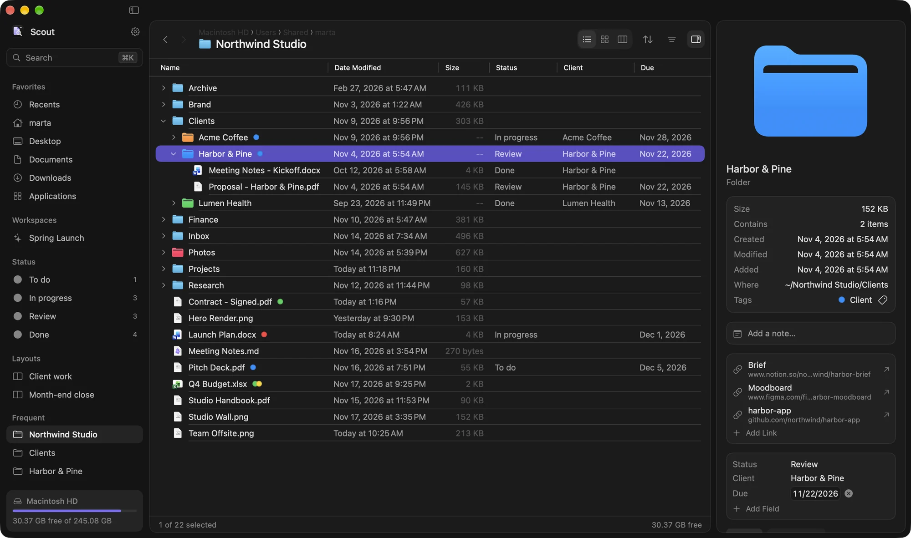
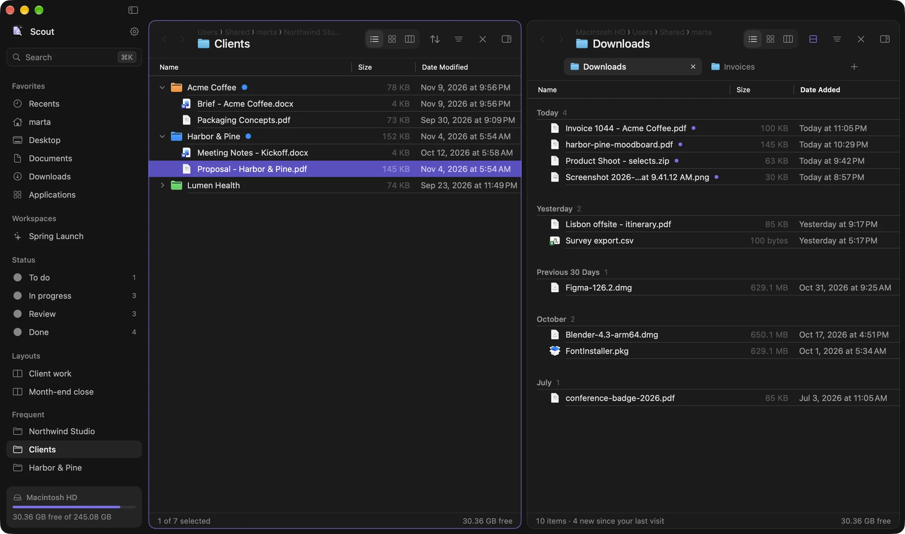
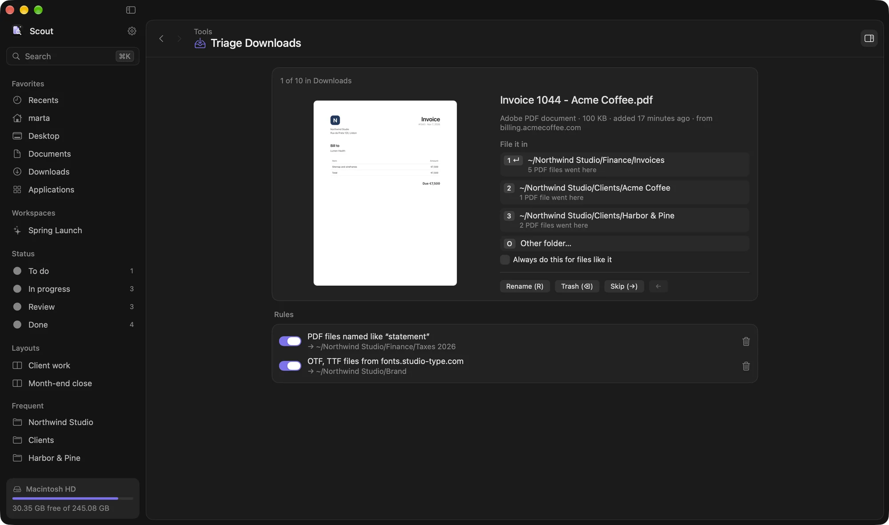
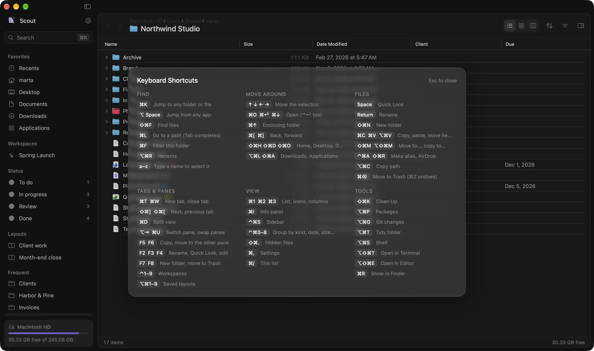
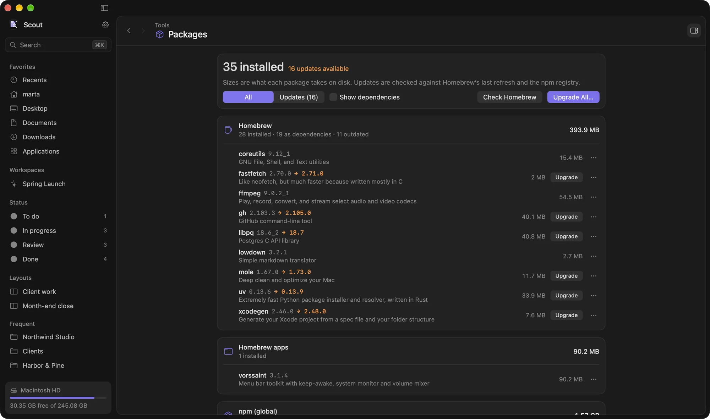

Install
Scout is free and open source. It needs macOS 26 or later and runs on Apple silicon and Intel Macs.
- Download Scout.zip and open it. Safari usually unzips it for you, leaving Scout.app in Downloads.
- Drag Scout into your Applications folder.
- Open Scout. The first time, macOS says it can’t verify the app. Click Done.
- Open System Settings ▸ Privacy & Security, scroll to Security, and next to “Scout was blocked to protect your Mac” click Open Anyway. Confirm with your password or Touch ID.
Why the warning? Apple charges developers $99 a year to sign apps, and Scout isn’t signed yet. You approve it once and it opens normally from then on. The full source code is public, and you can build it yourself to skip this step.
First launch
A welcome card shows the three things worth knowing on day one. Then macOS asks whether Scout can see your Downloads, Desktop and Documents folders. Click Allow: it’s a file browser, so it needs to.
To skip those questions entirely, give Scout Full Disk Access in System Settings ▸ Privacy & Security, the same as other file browsers.
Try it now: press ⌥ Space from any app and type a few letters of a folder you use often.
Make Scout your file browser
Two switches in Settings ▸ Keyboard & System (⌘,) hand everyday file browsing to Scout:
- Use Scout for “Show in Finder”. When another app reveals a file (“Show in Finder”, “Reveal in Finder”), it opens in Scout. Apps notice after they restart.
- Open folders in Scout. Folders opened from Spotlight, a browser’s downloads, other apps or Terminal’s
opencommand open in Scout, each in a new tab.
Turn on Open at login too, so ⌥Space is always ready.
Finder stays on your Mac: it still runs the Desktop and the Open/Save windows inside other apps, which no app can replace. Turn the switches off any time to go back. Scout’s own Show in Finder (⌘R) always goes to Finder.
Updating
Download the newest Scout.zip and replace the old app in Applications. Your settings, favorites, workspaces and history stay put. See what’s new in each build. If you built Scout yourself, run git pull && ./scripts/install.sh.
The window
Scout’s window has three parts, and you can hide either side.

Previews in the info panel include images, PDFs you can scroll, video, rendered Markdown and highlighted code. Press Space for a full Quick Look.
Find anything
Press ⌥Space in any app, or ⌘K inside Scout, and type a few letters. Press it again or Esc to go back to what you were doing.
- Folders come from a private index on your Mac, ranked by how often and how recently you visit them. “pro inv” finds “Projects/Invoices”.
- Files come from Spotlight, by name or by what’s inside them.
- Filter with the chips: Folders or Files, Any Kind, Any Time, and In this folder to search only where you are. ⇥ cycles All, Folders and Files.
- ↵ opens, ⌘↵ opens in a new tab or shows the file in Scout, ⇧↵ shows all results in a tab, where you can save the search to the sidebar.
from:and part of a site or sender finds downloads by where they came from:syllabus from:canvas.depaul.edu.0.3- Type
>to run any command, describe a file and press ⌥↵ to Ask Scout, and find screenshots by the text in them.0.3

Other ways to get somewhere
| Keys | What it does |
|---|---|
| ⌘L | Go to a path. ⇥ completes folder names. Type code . or terminal to open the folder in an app.0.4 |
| ⌘F | Filter the folder you’re in as you type. |
| ⇧⌘F | Find files (the palette, starting on Files). |
| ⌥⌘R | Recents: files opened or downloaded in the last 30 days. |
| ⇧⌘H D O A I | Home, Desktop, Documents, Applications, iCloud Drive. ⌥⌘L is Downloads. |
Views, tabs and split view
Three views
⌘1 list, ⌘2 icons with real thumbnails, ⌘3 columns. In the list, → and ← open and close folders in place (add ⌥ for everything inside). Right-click the column headers to add Kind or Tags. ⌘+ and ⌘− change icon size.
Selecting
Arrow keys move the selection in every view. Hold ⇧ with the arrows, or ⇧-click, to select a range; ⌘-click adds or removes one item. Type the start of a name to jump to it.
Tabs
⌘T opens a tab, ⌘W closes it, ⇧⌘] and ⇧⌘[ switch. Tabs and splits come back after you quit.
Split view
⌘D shows two folders side by side, each with its own tabs. ⌥⇥ switches pane, ⌘U swaps them, and F5 / F6 copy or move the selection to the other pane. The rest of the classic function keys work too: F2 rename, F3 Quick Look, F4 open in your editor, F7 new folder and F8 move to Trash (with fn on most Mac keyboards).0.4
Go ▸ Save Layout… remembers a window’s tabs and split view so you can bring them back with ⌥⌘1–9. See Saved layouts.0.4

Move, copy and drag
- Drag onto a folder to move into it (another disk copies; hold ⌥ to copy). Hover over a folder for a second while dragging to open it and drop deeper. Dragging several selected files moves them all.
- Drag onto the sidebar to file things without leaving the folder you’re in: drop on a favorite, a frequent folder, iCloud Drive, Dropbox or a disk to move into it, or on Trash to trash. Hover for a second to open it and drop deeper.
- Move to… without dragging: press ⇧⌘M, type a few letters of the destination, press ↵. ⌥⇧⌘M copies instead, and ⇥ switches between the two.
- Copy and paste: ⌘C, then ⌘V to paste a copy or ⌥⌘V to move it here.
- Shelf (⌥⌘S): collect files from several folders, then Copy Here or Move Here in one go.
When a name is taken, Scout asks Replace, Keep Both or Skip. Big copies show progress with Cancel, and moves to another disk check the copy before removing the original.
Every move, copy, rename and trash can be undone with ⌘Z. ⌘⌫ moves to the Trash, never deletes.
Tags, favorites and workspaces
Group, tidy and Recents
- Group By (⌃⌘0–8): split a folder into blocks by kind, name, size, date added, modified or created, or tags. Scout remembers it per folder. To group every folder the same way, pick one in Settings ▸ Browsing ▸ Group folders by; a folder’s Sort menu can still override it, and Use Default Grouping hands it back.0.3
- Tidy Folder (⌥⌘T): sorts loose files into folders such as PDFs, Images and Installers. You see the plan first, and ⌘Z undoes it.
- Recents (⌥⌘R): everything you opened or downloaded in the last 30 days, grouped by day.
- Hidden files: ⇧⌘. shows them for one tab.
Rename many files
Select files and press Return (one file renames in place). Build the new names from steps that run in order, and watch every name change in the preview before you apply it.
| Step | What it does |
|---|---|
| Replace | Find text and replace it. Turn on regular expressions (regex) to use patterns and $1 groups. |
| Add text | Put text at the start or end of the name. |
| New name | Replace the whole name, usually with variables, like Trip {n}. |
| Remove characters | Drop a number of characters from the start or end. |
| Change case | lower, UPPER, Title, Sentence, kebab-case, snake_case. |
| Trim spaces | Remove spaces at the ends and doubled spaces. |
Variables
Type them in any step, or pick them from the { } menu. Dates take a format, like {created:yyyy-MM-dd}, and text takes :lower or :upper. Write {{ for a literal brace.
| Variable | Becomes |
|---|---|
{name} {ext} | The original name and extension |
{n} | 1, 2, 3… with the start, step and digits you choose |
{parent} | The folder’s name |
{created} {modified} {added} | The file’s dates |
{today} {now} | Today’s date, or the date and time now |
{width} {height} | Image size in pixels |
{about}0.3 | A short name for what’s in the file, from Apple’s on-device model (needs Apple Intelligence) |
{uuid} | A unique ID |
Presets
Save any set of steps as a preset. Five come built in: Web-friendly names, Date + number, Remove “copy” and numbers like (1), Lowercase extensions and Smart names0.3. Scout flags names that clash or would be hidden before you apply, and can number clashes for you.
Clean Up
⇧⌘K shows how much space is free and what you could free up. Each category explains what it is; the safe ones come ticked, and the ones marked Your call are for you to decide.
- Developer caches and installers left in Downloads
- Old downloads, large files and screen recordings
- Duplicates: exact copies of files over 1 MB (the original is kept)
- Old
node_modules, Mail attachments, leftovers from deleted apps, and apps you haven’t opened in six months
Everything you pick goes to the Trash, so nothing is gone until you empty it.

Archives and Quick Actions
- Compress and Extract Here (right-click): zip items, or unzip
.zip,.tar(.gz,.bz2,.xz) and.7z. - Quick Actions (right-click): convert images (JPEG, PNG, HEIC, AVIF, TIFF, and WebP when
cwebpis installed), resize or flip them, and combine PDFs. Originals are kept.0.4 - New folder ⇧⌘N, new text file ⌃⌘N, copy path ⌥⌘C, make alias ⌃⌘A, AirDrop ⇧⌘R, and Finder’s Get Info ⌥⌘I.
Settings
Open with ⌘,.
| Section | What you can change |
|---|---|
| Appearance | Light, dark or match the system; accent color; window transparency and blur. |
| Browsing | The view for new tabs, a grouping for every folder, folders on top, hidden files, folder sizes, sidebar and info panel. |
| Keyboard & System | The Jump from anywhere key, Show in Finder and Open folders in Scout, the drop shelf0.4, the menu bar icon, Open at login. |
| Keyboard Shortcuts | Change any of 52 shortcuts. Scout sorts out clashes for you. |
| Developer tools | Git, Packages, AI Agents, and your terminal and editor apps. More below. |
What’s new in 0.4
Scout 0.4 adds everything in this part, and anything marked 0.4 elsewhere on this page. If you have an older Scout, download the new one and replace it. See the changelog for the full list.
Your own fields0.4
Give files and folders your own columns, like a spreadsheet: a Status to pick from, a Client, a Due date or an Amount. In the info panel, click Add a field and choose text, number, date or choice. Then set it on any file from the info panel.
- Each field gets its own column in list view. Right-click the column headers to show or hide it.
- ⌘K finds files by their field values.
- Each choice field adds a section to the sidebar, with a row for every choice and a count. A row lists everything set to that choice and updates as you change it. Drop files on a row to set that choice.
- Values follow files when Scout moves or renames them. Nothing is written into the files themselves.
To rename a field, change its choices or delete it, right-click its name in the info panel and choose Edit Field….
Links on folders0.4
A project lives in more places than its folder. In the info panel’s Links card, paste a web address or drop a link from your browser to attach it: the Notion brief, the Figma file, the repository, a client portal. Links are named after the site (Notion, Figma, GitHub…), open in one click, and follow the folder when it moves.
⌘K finds them too: type part of a link’s name (“acme notion”) to open it. Right-click a link to rename, copy or remove it.
Saved layouts0.4
Set up a window the way you like it, say Clients on the left with Downloads and Invoices in tabs on the right, then choose Go ▸ Save Layout… and name it. Open it again with ⌥⌘1–9, from the Go menu, or from Layouts in the sidebar. Right-click a layout in the sidebar to update it to the current window or delete it.
Downloads window and drop shelf0.4
- Downloads window: View ▸ Show Downloads Window, or Downloads Window in the menu bar icon, opens a small window that stays on top with your 30 newest downloads. Drag files out of it into any app, double-click to open, or drop files on it to move them into Downloads (⌥ copies).
- Drop shelf: turn on Settings ▸ Keyboard & System ▸ Drop shelf. Now when you drag files in any app to the top edge of the screen, a strip slides down with your favorite folders and the Shelf. Drop on a folder to move the files into it (⌥ copies), or on the Shelf to hold them for later. Moving needs a Scout window open, so the move can be undone with ⌘Z.
Open folders in your apps0.4
In Go to Path (⌘L), type a command instead of a path, the way you would in Terminal:
| Type | What it does |
|---|---|
code . | Open the folder you’re in with VS Code |
cursor ~/Sites/app | Open another folder with Cursor (paths can be relative to where you are) |
terminal edit | Your terminal or editor from Settings |
finder | Show the folder in Finder |
Scout knows code, code-insiders, cursor, windsurf, zed, subl, nova, bbedit, xed, tern, ghostty, iterm and warp, for whichever of those apps you have installed. Anything else is treated as a path.
AI Agents0.4
With Developer tools on, AI Agents in the sidebar (or Go ▸ AI Agents) lists your projects that are set up for Claude Code, Codex, Cursor, Gemini or Windsurf, most recently used first. For each one you see how many tokens your Claude Code and Codex sessions used there and the MCP servers it uses, with buttons to open it in Scout, your terminal or your editor, or open its CLAUDE.md or AGENTS.md.

At the top, Running dev servers lists local servers started from your folders, with their ports, so you can open one in the browser or jump to its folder. Scout reads all of this from the agents’ own files on your Mac. Nothing leaves it.
What’s new in 0.3
Scout 0.3 added everything in this part, and anything marked 0.3 elsewhere on this page. See the changelog for the full list.
Triage Downloads0.3
Press ⌥⌘J (or Triage Downloads under Tools) to go through new downloads one at a time, with a big preview. Each file takes one key:
| Key | What it does |
|---|---|
| 1 2 3 ↵ | File it in a suggested folder (↵ is the first) |
| O | Pick another folder |
| R | Rename it |
| ⌫ | Move it to the Trash |
| → ← | Skip, or go back |

Suggestions learn from where you put similar files before: the same site, words in common, or the same type. For example, “6 PDF files from canvas.depaul.edu went here”. Turn on Always do this (A) when you file something, and Scout makes a rule: new downloads like it go to that folder on their own while Scout is open. Each one shows in History, so you can undo it, and rules can be switched off or deleted on the Triage page.
To triage any other folder, open it and choose Go ▸ Triage This Folder.
History0.3
Press ⌥⌘Y to see everything Scout moved, copied, renamed or trashed, grouped by day. Unlike ⌘Z, it’s kept after you quit, for a year.
- Where did that file go? Type part of its name: Scout says what happened to it and where it is now, even if its folder moved later.
- Show takes you to it; Undo puts things back, even from days ago. If a file has moved since, or something new took its old place, Scout tells you rather than guessing.
Files that arrived since your last visit to a folder get a small dot, and the footer counts them.
Ask Scout and smart names0.3
On Macs with Apple Intelligence, Scout uses Apple’s on-device model. Nothing leaves your Mac.
- Ask Scout: describe a file in ⌘K, like “the lease I signed last spring” or “screenshots of error messages”, and press ⌥↵. Scout turns it into a search (words, a kind and dates) and shows what it understood, with a way back to your own words.
- Text in images: Scout reads the text in your newest images and screenshots in the background, so ⌘K finds them by what they say. Files that are only in iCloud or OneDrive are skipped.
- Smart names: in Rename Items, the
{about}variable (or the Smart names preset) names each file by what’s in it. Files it can’t read keep their names.
Commands and your scripts0.3
Type > in ⌘K to search every command in Scout’s menus and run it with ↵. Commands that don’t apply right now are dimmed.
Your own scripts go in ~/Library/Application Support/Scout/Actions/ (⌘K ▸ Open Actions Folder makes it, with an example). Each appears in ⌘K and under right-click ▸ Run Action, gets the selected files as arguments, and runs in the folder you’re looking at. Shell, Python, Ruby, JavaScript and AppleScript run with their usual interpreter. What a script prints is shown when it finishes.
Scripts run as you, with your permissions. Only put scripts there that you trust.
More in the info panel0.3
Compare folders0.3
Open two folders side by side (⌘D), then View ▸ Compare Folders…. Scout lists files only on one side, newer on one side, or different, including subfolders. Check contents reads files whose dates differ to see if they really changed.
Copy to Right → or ← Copy to Left copies new, newer and different files across after showing what it will do. Newer files on the receiving side are never overwritten, and replaced files go to the Trash. To make the two folders match exactly, also move the receiving side’s extra files to the Trash.
Cloud buckets0.3
Buckets ▸ Add Bucket… in the sidebar connects Cloudflare R2, Amazon S3 or other S3-compatible storage. For R2, use the endpoint https://<account>.r2.cloudflarestorage.com and region auto. Scout tests the connection before saving, and keeps the secret key in your Keychain.
A bucket opens as a page: go into folders, Download (to the other pane’s folder in split view, otherwise Downloads), Upload… or drop files on it, and make or delete folders. In split view, F5 uploads the selection into a bucket on the other side. Deleting from a bucket is permanent, so Scout asks first.
Disk Map0.3
Go ▸ Disk Map, or Disk Map next to “What takes the space” in the info panel, shows what fills a folder as blocks sized by space. Click a folder to go in, use the path bar to come back out, hover for sizes, and right-click to show, open or trash something.

Keyboard shortcuts
Press ⌘/ in Scout to see them on screen. You can change 52 of them in Settings.

Find and go
| ⌥Space | Jump from any app (change it in Settings) |
| ⌘K | Find any folder or file |
| ⌘L | Go to a path |
| ⌘F | Filter this folder |
| ⌘[ ⌘] ⌘↑ | Back, forward, enclosing folder |
| ⌘O ⌘↓ | Open |
| ⌥⌘R | Recents |
| ⌥⌘Y | History0.3 |
| ⌥⌘J | Triage Downloads0.3 |
Files
| Space | Quick Look |
| Return | Rename (several selected: Rename Items) |
| ⇧⌘N | New folder |
| ⌘C ⌘V ⌥⌘V | Copy, paste, move here |
| ⇧⌘M ⌥⇧⌘M | Move to…, copy to… |
| ⌘⌫ | Move to Trash |
| ⌘Z | Undo |
| ⌥⌘C | Copy path |
| ⌘R | Show in Finder |
| F2 F3 F4 | Rename, Quick Look, open in your editor0.4 |
| F7 F8 | New folder, move to Trash0.4 |
Tabs, panes and view
| ⌘T ⌘W | New tab, close tab |
| ⇧⌘] ⇧⌘[ | Next, previous tab |
| ⌘D ⌘U ⌥⇥ | Split view, swap panes, switch pane |
| F5 F6 | Copy, move to the other pane |
| ⌘1 ⌘2 ⌘3 | List, icons, columns |
| ⌃⌘0–8 | Group by |
| ⌘I ⌃⌘S | Info panel, sidebar |
| ⇧⌘. | Hidden files |
Tools
| ⇧⌘K | Clean Up |
| ⌥⌘T | Tidy Folder |
| ⌥⌘S | Shelf |
| ⌥⌘N ⌃1–9 | New workspace, open workspace |
| ⌥⌘1–9 | Open a saved layout0.4 |
| ⌥⌘P ⌥⌘G | Packages, git changes (Developer tools) |
| ⌥⇧⌘T ⌥⇧⌘E | Open in Terminal, open in editor (Developer tools) |
The full list, including every navigation shortcut, is in SHORTCUTS.md.
scout:// links
Any app, script or shortcut can control Scout with links. Try one in Terminal:
open "scout://open?path=~/Downloads"
| Link | What it does |
|---|---|
scout://open?path=~/Downloads | Open a folder (a file path reveals the file). Add &newTab=1 or &split=1. |
scout://jump?query=taxes | The palette, already filled in |
scout://workspace?name=Taxes | Open a workspace |
scout://recents | Recents |
scout://history | History0.3 |
scout://triage?path=~/Downloads | Triage a folder (no path: Downloads)0.3 |
scout://diskmap?path=~ | Disk Map of a folder (no path: your home folder)0.3 |
scout://tidy?path=~/Downloads | Tidy Folder’s plan (nothing moves until you confirm) |
scout://cleanup | Clean Up |
scout://packages | Packages (needs Developer tools) |
scout://changes?path=~/Code/app | Every changed file in a git repository |
scout://settings | Settings |
scout://shortcuts | The keyboard shortcuts |
Shortcuts app and menu bar
Scout adds actions to the Shortcuts app and Siri: Open in Scout, Open Workspace, Jump, Recents, Clean Up and Tidy Downloads.
The menu bar icon has Jump, your latest downloads and the Downloads window0.4, favorites, workspaces, Recents, Clean Up and the Shelf. Turn it off in Settings.
The scout command
Scout ships a command-line tool inside the app. Link it onto your PATH once:
mkdir -p ~/.local/bin ln -sf /Applications/Scout.app/Contents/Helpers/scout ~/.local/bin/scout
Then:
# cd to the best-matching folder, like zoxide cd "$(scout jump proj)" # ranked matches, the same ranking as ⌘K scout rank proj --json # open the current folder in Scout, in a new tab scout open . --new-tab # rebuild the folder index scout index # duplicate files (no folder means your whole home) scout duplicates ~/Desktop
Raycast
The raycast folder in the repository is an extension with Jump to Folder and Open Finder Selection in Scout. It needs the scout command above and Node.js. From a clone of the repository:
cd raycast && npm install && npm run dev
Stop it with ⌃C; it stays installed in Raycast.
Developer tools
Turn on Settings ▸ Developer tools (it’s off for new installs) for:
A downloaded repository’s own settings can tell git to run programs. Scout checks first, and in a repository like that it waits until you click Trust This Repository.

Build from source
Building Scout yourself skips the “Open Anyway” step, because macOS trusts apps built on the same Mac. You need macOS 26, Xcode 26 or later (free, several GB) and Homebrew. No Apple developer account.
- Set up Xcode once. Open it so it finishes installing, quit, then:
sudo xcode-select -s /Applications/Xcode.app sudo xcodebuild -license accept
- Get the code and build.
brew install xcodegen git clone https://github.com/jackpawlik26/scout.git cd scout ./scripts/install.sh
The script builds Scout, replaces /Applications/Scout.app, opens it and links the scout command. To update, run git pull && ./scripts/install.sh in the same folder. Troubleshooting, building a specific release and more are in the full build guide.
Privacy and your data
Scout has no accounts, analytics or tracking. Only two things go online: Packages, which asks Homebrew and npm whether updates exist, and buckets you add yourself, which talk only to the storage you connected. On-device AI runs on your Mac. Everything else stays in ~/Library/Application Support/Scout/:
| File | What it holds |
|---|---|
folders.txt | The folder index behind ⌘K, one path per line |
history.json | Folder visits, for “most used” ranking |
favorites.json workspaces.json saved-searches.json | What their names say |
customizations.json | Folder colors, symbols, nicknames, pins and notes, plus links and your own fields0.4 |
rename-presets.json | Your saved rename presets |
file-history.jsonl0.3 | What Scout moved, copied, renamed and trashed (History), kept for a year |
triage-rules.json0.3 | Triage’s “Always do this” rules |
image-text.json0.3 | Text read from your images and screenshots, so ⌘K can find them |
opens.json0.3 | Files you opened through Scout, for “Used around the same time” |
buckets.json0.3 | Buckets you added. Their secret keys are in your login Keychain, not here |
Actions/0.3 | Your scripts for ⌘K and Run Action |
Questions
Does Scout replace Finder?
It does nearly everything Finder does and adds a lot, but Finder stays on your Mac: it still runs the Desktop and the Open/Save windows in other apps. You can switch back any time in Settings.
Scout can’t see some folders.
You may have clicked “Don’t Allow” on one of macOS’s questions. Give Scout Full Disk Access in System Settings ▸ Privacy & Security, then reopen it.
⌥Space doesn’t open Scout.
Scout needs to be running: turn on Open at login in Settings. If another app already uses ⌥Space, pick a different key in Settings ▸ Keyboard & System.
A folder I use isn’t found in ⌘K.
The index refreshes in the background. Visit the folder once, or run scout index to rebuild it now. To search somewhere outside your home folder, open it and use the In this folder chip.
Git isn’t showing in a repository.
Turn on Settings ▸ Developer tools. If the header says the repository needs trust, click Trust This Repository after checking where it came from. Git also needs Xcode or the command line tools installed.
Is Scout really free?
Yes, free and open source under the MIT License. No account, no subscription, no ads.
I found a bug or have an idea.
Open an issue on GitHub. A short description and a screenshot are plenty.
Uninstall
First turn off Open folders in Scout and Use Scout for “Show in Finder” in Settings, so folders open in Finder again. Then quit Scout and drag it from Applications to the Trash. To remove its data and settings too:
rm -rf ~/Library/Application\ Support/Scout ~/.local/bin/scout defaults delete com.jackpawlik.scout
Still stuck?
Scout is built in the open. Ask a question or report a bug on GitHub, or see what changed in each build.